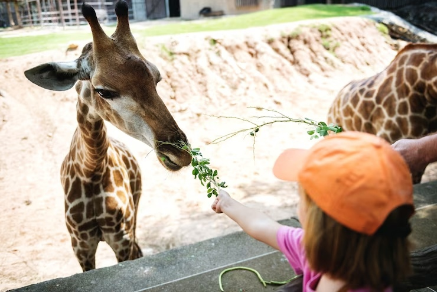

Музей музыкальных инструментов
Музыка. Она манит, окружает, дарит восторг, приглашает в страну сказки и волшебства. Ее окружают легенды, мифы и истории. Ознакомиться с ними можно в Музее в ходе экскурсии в музее музыкальных инструментов, в коллекции которого различные музыкальные инструменты, используемые и простыми любителями, и профессиональными музыкантами.
Яркий пример – гусли, традиционный русский народный музыкальный инструмент, представлены в экспозиции музея. Этот древний инструмент, звучал на Руси с незапамятных времён, упоминается не только в сказках и былинных эпосах, но и в других видах народного творчества, таких как песни и поговорки.
Немногие знают в селе Толбухино о замечательном гусляре Федоре Кислове. А ведь он и у Шереметевых жил, в Российском конкурсе занял 3-е место, был знаком с Есениным. Да и Сергей Есенин, вряд ли, не подпевал Давыдовскому гусляру! По отзыву С.Н. Кошкарова, земляка и близкого приятеля Ф.А.Кислова, он являлся «одним из последних гусляров, которыми была так богата Древняя Русь…»
В детстве юный Федор — свирельщик у помещика Глебова-Стрешнева; последний продал его гр. Д. Н. Шереметеву, который помог одарённому юноше уехать в Петербург, где тот занялся торговлей и изучением музыки. Вскоре Кислов стал незаурядным музыкантом; Шереметев перевёл его к себе в дом, подарил дорогие гусли. Благоговейное отношение к музыке Кислов сохранил до конца жизни. «Каждый проповедник, каждый оратор не должен… прикасаться к душе народной, если он не любит музыки»
Виртуальный музей
Немного об экспонатах